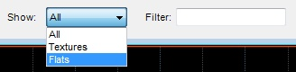
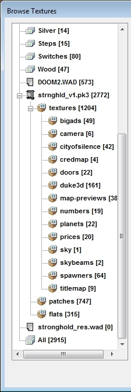

| The Image browser displays the directory structure of a Folder, PK3 and PK7 resource, allowing you to group and find textures easier. You can filter textures by texture size. If the current game configuration supports mixed textures and flats, you can filter textures by image type using this drop down:  Technical notice: For textures defined in TEXTURES lump, the location of the first patch is used as texture path. |
 |